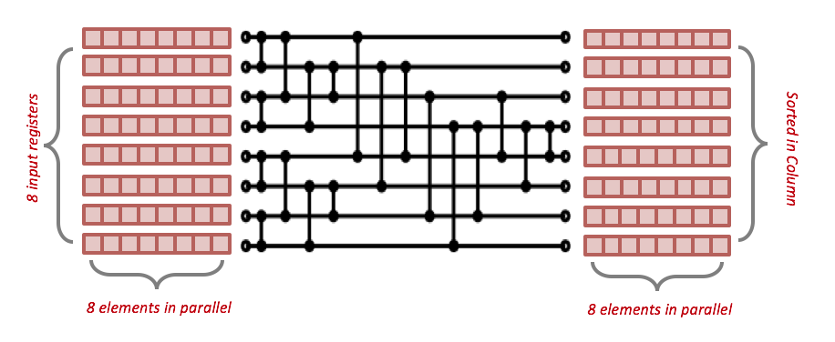

We also have a independent repository for the SIMD sort independently: avx2-merge-sort
Proposal
Summary
We present an efficient implementation and analysis of merge sort with 256-bit AVX2 based on the CMU database project Peloton. The objective is to implement an optimized Merge-Sort operator into the Peloton in-memory database system made by \href{https://github.com/cmu-db/peloton}{CMUDB}. We divide the sorting towards sort phase and merge phase. For sort phase, we build a sorting network which could sort 64 element in parallel each time and a matrix transpose network to transpose the result for merging. In addition, our algorithm performs an efficient multiway merge utilizing bitonic-merge network. Finally, we incorporate the parallel merge-sort design in the operator we build for Peloton and evaluate the performance gains and utilization that technique offers.
Background
Peloton is an in-memory database project that is developed by the CMU Database Group based on the RDBMS model with ACID guarantees. Since this system does not use the disk for storing and retrieving data, it needs to address bottlenecks associated with the memory hierarchy (caches), memory access patterns, concurrency control across multiple cores in order to utilize the available hardware effectively. Peloton, being a HTAP (Hybrid Transaction Processing) system, should be capable of handling both OLTP and OLAP workloads. OLAP involves long running queries that operate on large volumes of data across multiple relations. Joins are in important class of operators for OLAP workloads and OLAP joins have good scope for parallelization since they work on large volumes of data in memory. This approach to database parallelism is known as > intra-query parallelism. Presently, Peloton does not support intra-query parallelism for any class of queries. Based on the relevance to what we learnt from this course and the approaches followed by existing database literature, we chose to work with sort-merge join.
A join algorithm accepts two input relations and merges corresponding tuples that match the predicate applied on the join attributes of the two relations. The classical Sort-Merge join algorithm consists of 3 phases -
An optional partitioning phase - this phase is used to partition the input relations, which could be in the form of dividing the input load across different workers or cores.
The sort phase - this phase sorts the tuples of input relations based on the join key
The merge phase - this step scans through the sorted runs of the input relations in lock-step and merges a pair of tuples if the join predicate is satisfied. Assuming no duplicate tuples in either relation, merge can be performed in a single pass.
The biggest challenge for parallelization for the sort phase is there are a lot of data dependencies in all sorting algorithms. The work done in Oracle and Intel's "Fast Join Implementation on Modern Multi-core CPUS" and ETH's "new optimization and results for radix hash join" use a cache-conscious approach for the sort phase. These approaches implement merge sort and apply a different implementation for merge sort depending on the level in the memory hierarchy. For register-level and cache-level sorting, these papers claim that using SIMD is important to achieve good speedup and hardware efficiency. The work done in Hyper claims that SIMD-based sorting isn't necessary to achieve good performance and processor scalability for sort-merge join. They propose a NUMA-aware implementation that incurs the partitioning phase to chunk the input relations across NUMA-sockets, produces core-local sorted runs of these chunks and applies the join predicate for each chunk of the first relation against all chunks of the second relation. The rationale for this approach is that complete traversal of the second relation's chunks will not happen for any given first chunk, since they are already sorted. They also state that the memory prefetcher can mask the interconnect latency when sequential access is carried out on non-local sockets. Our project would be focussed towards integrating the key ideas introduced by these approaches - using a SIMD-based low-level sorting implementation and NUMA-aware data partitioning and evaluating the performance and scalability of our implementation as we add these features
The Challenge
We use AVX2 CPU intrinsics to implement cache-conscious sorting with SIMD. Since AVX2 offers low-level primitives it could be fairly complicated to implement a fully-functioning sorting network. We also need to be careful about the type of AVX2 instructions we use; an implementation with unnecessary calls to gather and scatter can limit the performance of the implementation. The workload involves large relations that need to be sorted, which inherently comes with a high communication-to-computation ratio, since large tables will certainly not fit a single memory region. Since sorting is an operation that attempts to establish global order across distributed elements, reducing and optimization the communication patterns would be the primary challenge. None of the papers discussed in the previous section have a perfect solution for this. Instead, they rely on data access patterns and instructional similarity in some operations of join to make better utilization of the hardware.
Resource
We are working based on the code base of the CMU in-memory DBMS project Peloton. For SIMD merge-sort method, we plan to refer to the oracle and intel's sort merge work
C. Kim, T. Kaldewey, V. W. Lee, E. Sedlar, A. D. Nguyen, N. Satish, J. Chhugani, A. Di Blas,and P. Dubey. Sort vs. hash revisited: fast join implementation on modern multi-core cpus.Proceedings of the VLDB Endowment, 2(2):1378–1389, 2009.
For the numa-aware improvement, we plan to refer to the method provided by the Hyper work
M.-C. Albutiu, A. Kemper, and T. Neumann. Massively parallel sort-merge joins in mainmemory multi-core database systems.Proceedings of the VLDB Endowment, 5(10):1064–1075,201.
For the partitioning improvement, we plan to refer to the Radix Hash Join method
C. Balkesen, J. Teubner, G. Alonso, and M. T. ̈Ozsu. Main-memory hash joins on multi-core cpus: Tuning to the underlying hardware. InData Engineering (ICDE), 2013 IEEE 29thInternational Conference on, pages 362–373. IEEE, 2013.
The parallel data lab provides PDL clusters for us to do the evaluation. There are nodes of NUMA architecture inside so as we can test the numa-aware implementation based on that. Also, we plan to use TPC-h benchmark to compare the scalabilities among the non-paralel , non-NUMA-aware SIMD and NUMA-aware versions of peloton.
Goal and Deliverables
Minimum Goal: We set the minimum goal as the implementation of the logistic of the SIMD version merge-sort, together with a thorough performance analysis for that. We don't expect scalability for the minimum goal. The deliverable for this goal includes a consistent and runnable SIMD merge-join mechanism for peloton, and a report comparing and analysing of the performance among the sequential and parallel version. We expect a B score for reaching minimum goal.
Main Goal: The main goal is an scalable parallel merge-sort join mechanism of Peloton, together with the evaluation and performance analysis. Compared to minimum goal, we want to further optimize the method so as the performance of sort-merge join could scale when number of cores increase. The deliverable for this goal includes the scalable sort-merge join mechanism based on SIMD and an through evaluation report of that. We expect an A scrore for reaching main goal.
Stretch Goal: We have two stretch goals. The first stretch goal is to implement a NUMA-aware merge-sort join mechanism together with the evaluation showing the benefit gained from that. The second stretch goal is to implement the radix hash join partitioning method to get further performance improvement. The deliverable for this phase is the implementation together with an evaluation based on machine with NUMA architecture. We expect an A+ for accomplish either of the stretch goals.
Platform Choice
We use PDL cluster as the evaluation machine because it provides NUMA node. We choose C++ as the programming language since it has SIMD lib and it is the language of Peloton.
Project Checkpoint
Revised Schedule
| Week Number | Tasks |
|---|---|
| 1 |
|
| 2 |
|
| 3 |
|
|
|
|
| 4-1 |
|
|
|
|
| 4-2 |
|
|
|
|
| 5-1 |
|
|
|
|
| 5-2 |
|
| 6-1 |
|
|
|
|
| 6-2 |
|
Design and Implementation
Sequential Merge-Sort Join
In Peloton's plan tree, a merge-sort join could be represented as a merge-sort-join node. Each child node of it is a Merge-sort operator, which returns one tier at each call. The merge-sort join operator call the sorting operator of both sides accordingly and generate the final result.
Sorting Network
In sorting phase, we use a hard-coded sorting network to perform sort on fixed numbers of values in parallel. A common case of sorting network is the 5-comparisons network for 4 * 4 elements sorting. In our implementation, the register size of avx2 could be 256 bit, thus can hold 8 elements, thus we utilized the Bose-Nelson Algorithm which sorts 8 * 8 elements in parallel. The algorithm is shown as the picture and it has 19 comparator and 7 rounds. we perform the following steps.
The sorting network we implement is shown in Figure 1. The horizontal wires represent data flow (from left side to right side). While the vertical wires represent minmax comparator which put smaller data to the upper line and larger data to the lower line. Each row of the red boxes in the picture represents a register with 8 elements inside. Before the sorting phase, we divide input data into 8*8 matrices and put them into 8 avx2 registers as the input of the sorting network. The 8 column of the input matrix will go through the sorting network concurrently, and produce 8 sorted column in the output registers.
Matrix Transpose
After the sorting network, we get 8 sorted columns. However, we need 8 sorted array stored respectively in 8 avx2 registers to conduct next phase. Thus we need to transpose the result matrix so as each input line of size 8 is sorted. The idea to implement transpose method is to interleave two adjacent matrix row first, and then shuffle to pick the candidate elements for each row. Take a 4*4 matrix {{1,2,3,4},{5,6,7,8},{9,10,11,12},{13,14,15,16}} as an example, after the interaction of (row0, row1) and (row2,row3), the matrix would become {{1,5,2,6}, {3,7,4,8},{9,13,10,14},{11,15,12,16}}. Then we use shuffle to pick the {1,3,5,7} from {1,5,2,6} and {3,7,4,8}, we can get the first result row. The following rows can be generated in the same way.
For 8*8 matrix, we first use interleave to combine each two adjacent elements in the same column together. In the second step, we use shuffle to combine two result lines of interleaving and gather 4 elements of a same line in one register. In the final step we call shuffle again and transpose each column to rows.
4*4 Matrix Transpose Network
input: 4*4 Matrix sorted in column (each row represented by a register, namely r0-r3)
result: 4 sorted array in register row}
t0 → interleave_first(r0, r1)
t1 → interleave_first(r0, r1)
t2 → interleave_first(r2, r3)
t3 → interleave_first(r2, r3)
a → shuffle<0, 1, 4, 5>(x, z)
b → shuffle<2, 3, 6, 7>(x, z)
c → shuffle<0, 1, 4, 5>(y, w)
d → shuffle<2, 3, 6, 7>(y, w)
AVX2 rearranging instructions used for Matrix Transpose
| Instruction | Cycles | TPut |
|---|---|---|
| _mm256_unpacklo_ps | 1 | 1 |
| _mm256_unpackhi_ps | 1 | 1 |
| _mm256_shuffle_ps | 1 | 1 |
| _mm256_permute2f128_ps | 3 | 1 |
Bitonic Sort
After the sorting phase is completed we receive runs of elements that are locally sorted. These runs need to be merged to eventually produce the globally sorted array. The merge phase goes through multiple iterations - at each phase we merge twice the number of elements than in the preceding phase. We have $O(log n)$ merge phases and each phase makes multiple calls to the Bitonic Merge function, making it the component that directly influences the overall performance of the algorithm. Bitonic merge consists of a collection of min-max and shuffle operations that make it conducive for vectorization.
A general Bitonic Merge network takes as input two equally-sized sorted arrays. Let us assume that the size of these arrays is 8. The second array is reversed. The corresponding elements of the two arrays are compared to generate two output arrays that have the minimum and maximum vales at each position. By reversing the second array, the algorithm is able to guarantee that at the end of this first min-max pass all the 8 elements in the "min"-array are smaller than all the elements in the "max"-array. In the next step, within each array we find the min and max between the 1st and 5th element, 2nd and 6th element and so on. While the previous phase compared against elements that were 8 locations apart, this phase compares elements that are 4 locations apart. We again a create separate array for min and max values as before. After this step, within each array, the first 4 elements are guaranteed to be smaller than the last 4 elements. Further, all the elements in the min-array are still smaller than all the elements in the max array as no data exchange happened between these two arrays since the previous min-max phase completed. We continue recursively to perform smaller range min-max swaps to eventually produce two arrays that store elements in a globally sorted order. This algorithm is guaranteed to complete in log2 n + 1 minmax exchanges.
Algorithm 3 illustrates the steps involved in scalar bitonic merge. Implementing this in AVX-2 is not so straightforward. Consider the case of merging two AVX-2 registers. Each register contains 8 packed 32-bit signed integers that are sorted by the sorting network discussed earlier. We can directly apply min-max across these two registers to generate the two output registers ra and rb where all elements in ra are smaller than or equal to all the elements in rb. The subsequent steps of Bitonic merge require sorting within each register. There are no instructions in the AVX-2 instruction set that can directly perform intra-register sort. If we want to use the min-max registers from before, we need two input registers. Hence the strategy followed is to create a shuffled copy of the given register that needs to be sorted. Considering the register ra, a shuffled copy ra' for 4-range compare is created, such that
if ra = {a, b, c, d, e, f, g, h}, we first compute -
min(a,e); max(a,e); min(b,f); max(b,f); min(c,g); max(c,g); min(d,h); max(d,h)
then, ra' = {e, f, g, h, a, b, c, d}


We can now apply min-max across (ra, ra'). Since min-max is a commutative function, minmax(a,e) = minmax(e,a). The result we get is -
min({a, b, c, d, e, f, g, h}, {e, f, g, h, a, b, c, d})
= {min(a,e), min(b,f), min(c,g), min(d,h), min(e,a), min(f,b), min(g,c), min(h,d)}
The first 4 elements are same as the last 4 elements. Similarly,
max({a, b, c, d, e, f, g, h}, {e, f, g, h, a, b, c, d})
= {max(a,e), max(b,f), max(c,g), max(d,h), max(e,a), max(f,b), max(g,c), max(h,d)}
The result that we want for the next step (i.e. 2-range compare) is
new_r = {min(a,e), min(b,f), min(c,g), min(d,h),
max(a,e), max(b,f), max(c,g), max(d,h)}
We use an additional shuffle instruction that accepts two registers as input, discards half the elements, shuffles the remaining half to output the new 8 element register.
Generalized Merge
From the previous phase, bitonic merge can be directly applied to obtain runs of 16 elements that are sorted. Further levels of merge build up on 8-by-8 bitonic merge to completely sort the array. For instance, to merge 2 sorted 16 elements arrays, we perform the following steps -
- Apply Bitonic merge for the first 8 elements of the two input arrays. This outputs 2 registers where the first register (A) has sorted elements that are all smaller than the elements of the second sorted register (B). We store the contents of A into the output buffer. We then load in the next elements from the array which has the smaller element at the current pointer position and compare it against B.
- The process described in (1) is applied by consuming 8 elements at a time from either array to finally produce a sorted array of 16 elements.
- If there are n input elements, generalized merge repeats step 1 and 2 O(log n) times to completely sort the input array.
Issues
- Peloton uses tuple to store data, we need to figure out how to maintain the reference of tuple while doing sort.
- Currently our methods only support array lengths which are times of 64
Authors and Contributors
The project is planed to be done evenly by Siddharth Santurkar (@sid1607) and Lei Qi (@xhad1234).